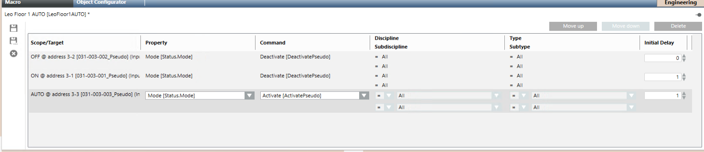
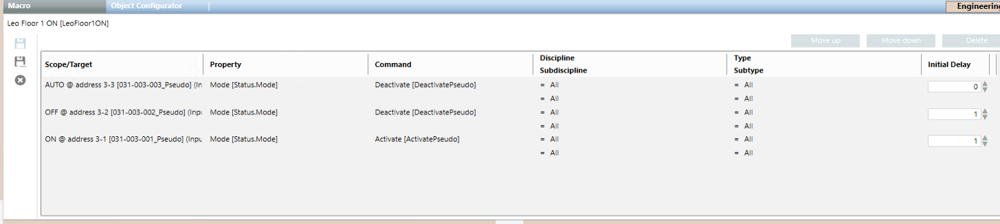
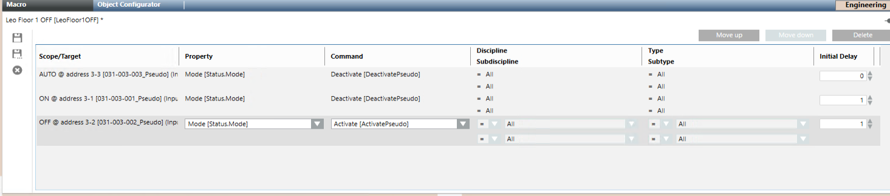

Configuring Smoke Control Macros
Scenario
You want to configure a macro that will trigger the smoke control functions configured in Zeus by clicking a graphic symbol. In the macro, you can set an Initial Delay of one or more seconds from the second command. Examples will be given to explain the operation. Use the pseudo points that represent the inputs in the macros, but not the pseudo points that represent the output feedback. To ensure outputs are always aligned to the panel's behavior, never use macros to command them. For general information on macro configuration, see Macros.
Auto Macro
- Open or create the macro.
- Drag the following pseudo points to the macro instruction row: AUTO Pseudo, OFF Pseudo and ON Pseudo.
- Set Property to Mode [Status Mode].
- In Command, select Deactivate for OFF Pseudo and ON Pseudo.
- In Command, select Activate for AUTO Pseudo.
- Complete and save the macro.

Smoke Mode Macro
- Open or create the macro, which will take control of the panel and make an air intake.
- Drag the following pseudo points to the macro instruction row: AUTO Pseudo, OFF Pseudo and ON Pseudo.
- Set Property to Mode [Status Mode].
- In Command, select Deactivate for AUTO Pseudo and OFF Pseudo.
- In Command, select Activate for ON Pseudo.
- Complete and save the macro.

Off Macro
- Open or create the macro.
- Drag the following pseudo points to the macro instruction row: AUTO Pseudo, OFF Pseudo and ON Pseudo.
- Set Property to Mode [Status Mode].
- In Command, select Deactivate for AUTO Pseudo and ON Pseudo.
- In Command, select Activate for OFF Pseudo.
- Complete and save the macro.
